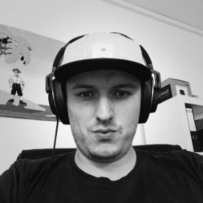

I am a software developer with a slight faible for web platforms, services and API design. The last 15 years, I have worked on browser games, scalable websites, APIs and web applications.
Currently I teach at the department of „Web Development & Engineering“ at University of Applied Sciences Salzburg and I also own a lovely but crazy dog named Gismo.
2013 – now: Die Netzarchitekten
Die Netzarchitekten
2014 – now: MultiMediaTechnology – Senior Lecturer
MMT Blog & Website
2015 – 2016: Polycular – Senior Developer
Polycular
2013 – 2015: cnuddl – Social Petsitting
cnuddl
2012 – 2014: MultiMediaTechnology – External Lecturer
University Of Applied Sciences Salzburg
2011 – 2013: Fredminds-BD GmbH & Co KG
2009 – 2011: RC-Eins GmbH
2007 – 2009: WDA Salzburg – External Lecturer
WIFI Salzburg
2005 – 2010: MultiMediaArt, 3D Animation and VFX (Study)
University Of Applied Sciences Salzburg
dumpsterchef – Dumpster diving and dinner
Dumpsterchef
netiam – A pure REST library for Node.js
netiam
concat – The webdevelopment conference in Austria
concat
Silver – Interactive Realtime Fluids for XBox 360
Ace of Mace – Game
Ace of Mace
Barcamp Salzburg – the next web
Barcamp Salzburg
Meetup: Salzburg Webdev
Salzburg Webdev Meetup
Trivago Hackathon
Hackathon 2015
just-relax
ESA App Camp
ESA Space App Camp